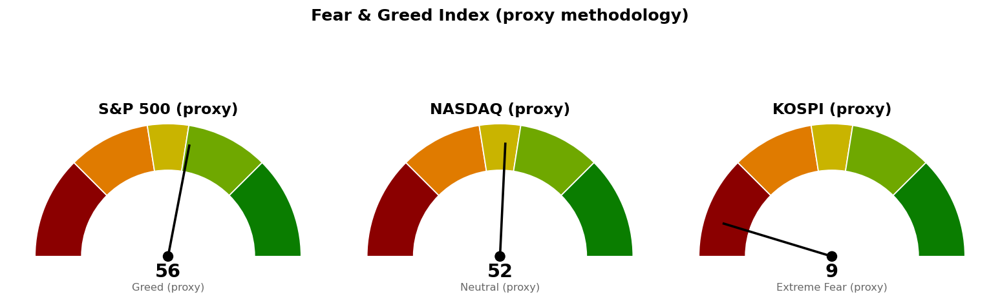

| 직전에 건 조건 | 판정 | 근거 |
|---|---|---|
| 코스피 다음 지지 5,451 (종가 하회) | 미충족 | 10/16 종가 5,719 · 저가 5,590 |
| 코스피 기준선 6,000 (종가 상회) | 미충족 | 10/16 고가 5,810 |
| S&P 500 기준선 7,794 · 다음 지지 7,665 | 진행 중 | 10/16 장중 7,711~7,757 |
| 나스닥 기준선 26,992 (종가 상회) | 진행 중 | 10/16 장중 고가 26,675 |
| 나스닥 다음 지지 26,432 (종가 하회) | 진행 중 | 장중 26,407로 아래, 종가는 오늘 밤 05:00 |
| 나스닥 사다리 1차 26,680 | 10/14 닿은 회차 | 10/16 시가 26,653로 그 아래에서 열림 — 새 회차 아님 |
| 나스닥 사다리 2차 26,261 · 취소선 25,967 | 미충족 | 10/16 장중 저가 26,371 |
| 30년 금리 5.286% (종가 하회) | 미충족 | 10/15 종가 5.429% · 10/16 장중 5.413% |
직전이 다음 세션에 볼 것으로 남긴 코스피 5,451은 지켰고(종가 5,719, +2.97%), 6,000까지는 오르지 못했습니다. 미국 쪽은 오늘 세션이 끝나지 않아 판정할 선이 없습니다. 어느 선도 새로 확정되지 않았으므로 세 지수 모두 가격을 옮기지 않으며, 아래 레일의 가격은 직전과 같습니다. 직전 판단에서 정정할 것은 없습니다.
20일선·50일선은 지수이동평균(최근 가격에 더 무게를 둔 평균)입니다. 미국 두 지수 값에는 끝나지 않은 10월 16일 장중 봉이 들어 있습니다.
기준선은 하루 평균 변동폭 한 번으로는 닿지 않는 거리입니다. 90일 박스(7,328~7,828) 안쪽 판정은 분산 우위(지지 테스트마다 매도 거래량 증가, 저점 절하, 상승봉 대 하락봉 거래량비 1.03)이며, 10월 6일 7,845에서 박스 상단을 잠깐 넘었다가 되밀린 속임수 상승이 있었습니다. 200일 이동평균 7,272 위이고 52주 고점 대비 -1.63%입니다.
나스닥은 오늘 시가부터 50일선 아래에서 거래되고 있습니다. 오늘 종가가 26,432 아래면 다음 받침은 사다리 2차 26,261이고, 그 아래는 25,953~26,074 구간입니다. 90일 박스(24,897~27,296) 안쪽 판정은 중립(지지 테스트 매도 거래량 감소, 저점 절하, 거래량비 1.09)이며, 10월 2일 · 8일 · 12일 세 번 박스 상단을 넘었다가 되밀렸습니다.
코스피는 6번 반응한 가격대(5,730~5,746) 바로 아래에서 마쳤습니다. 다음 세션은 10월 19일(월)이며 그 시가는 오늘 밤 뉴욕 종가가 먼저 정하므로 코스피 계획은 미국장 결과에 종속됩니다. 세 지수 모두 기준선 아래로 방향이 같고, 경로를 말할 근거가 없어 이번에도 방향을 말하지 않고 기준선과 두 갈래만 냅니다. 남은 회차를 전부 집행하면 계좌의 14%(19,529,776원), 모두 취소선에서 멈추면 계좌 -0.33%(-459,178원)이며, 종가가 취소선을 건너뛰어 마치면 손실은 이보다 커집니다.
| 지수 | 값 | 등락 | 시가 | 고가 | 저가 |
|---|---|---|---|---|---|
| S&P 500 (10/16 장중) | 7,717 | -0.35% | 7,745 | 7,757 | 7,711 |
| 나스닥 종합 (10/16 장중) | 26,411 | -1.13% | 26,653 | 26,675 | 26,371 |
| 코스피 (10/16 종가) | 5,719 | +2.97% | 5,654 | 5,810 | 5,590 |
| 니케이 225 (10/16 종가) | 65,350 | +1.43% | 64,925 | 65,712 | 64,801 |
오늘 미국 11개 업종 중 9개가 오르고 있는데 S&P 500은 -0.35%입니다. 내리는 업종은 기술(XLK -1.81%)과 커뮤니케이션(XLC -0.64%) 둘이며, 두 업종의 지수 비중이 커서 나머지 아홉 업종이 올라도 지수는 내리고 있습니다.
미국 주도섹터는 필수소비재·헬스케어·에너지 셋이며, 1위가 헬스케어에서 필수소비재로 바뀌었습니다. 기술은 여섯 브리핑 연속 줄어 11개 업종 중 최하위로 내려갔습니다. 유틸리티·소재가 0 위로 올라왔고 금리에 민감한 부동산도 -3.60에서 -1.11로 좁혀졌습니다.
한국 섹터는 테마형 ETF 기준이라 미국 업종 ETF와 성격이 다르고, 코스피가 크게 빠진 구간의 초과수익이라 절대 수익이 플러스라는 뜻이 아닙니다. 이번 브리핑에서는 종목 발굴을 돌리지 않았습니다.
| 항목 | 값 | 직전 대비 |
|---|---|---|
| 미국 경기선행지수 (2026년 9월) | 101.00 | 8월 대비 +0.05 · 직전과 같음 |
| 한국 경기선행지수 (2026년 9월) | 102.53 | 8월 대비 -0.13 · 직전과 같음 |
| 미 10년 명목금리 | 5.19% (10/14 확정) · 10/16 지수 시세 5.077% | 확정치 직전과 같음 · 시세 -0.012%포인트 |
| 미 10년 기대물가 | 2.32% (10/15) | 직전과 같음 |
| 미 10년 실질금리 | 2.84% (10/14) | 직전과 같음 |
| 유가 (WTI) | 확정치 101.91달러 (10/14) · 선물 95.64달러 (10/16 장중) | 확정치 직전과 같음 · 선물 -2.38% |
| 달러지수 (광의) | 121.60 (10/9) | 직전과 같음 |
| 변동성지수 (VIX) | 16.21 (10/16 장중) | -1.52% · 백분위 45.2 (직전 51.8) |
경기선행지수(OECD가 장기 평균을 100으로 놓고 경기 방향을 몇 달 앞서 보여주는 지표)와 FRED 일별 계열은 직전 브리핑 이후 새 값이 없어 해석을 바꾸지 않습니다. 오늘 10년 금리 시세가 내리는 동안 금 선물이 +0.67%(4,198.20달러) 올라, 실질금리 방향(10/14까지 하락)과 금의 움직임은 일치합니다. 30년 금리는 장중 5.413%로 편입 재개선 5.286%보다 0.127%포인트 위입니다.
1. BofA 전략가들 "매도 신호는 꺼졌지만 매수는 이르다" (MarketWatch) 10월 조정으로 채권시장 부담이 줄며 금리 민감 업종이 살아났다는 진단으로, 오늘 유틸리티·부동산의 20일 초과수익이 좁혀지고 10년 금리 시세가 내린 것과 같은 방향입니다. 지수 계획에서 매수 회차를 기준선 위가 아니라 아래에 둔 것과도 맞습니다.
2. 워시 연준 의장, 추가 인상 신호 유보 — 각국 중앙은행의 동시 긴축을 평가 (CNBC) 10월 28일 FOMC 전에 인상 신호를 내지 않았습니다. 10년 금리 5% 위, 30년 금리 5.4% 위 상태에서 금리 쪽 압력이 더 커지지 않는다는 뜻이며, 30년 금리 5.286% 편입 재개선과 직접 걸립니다.
3. S&P 500 종목의 40% 가까이가 52주 고점 대비 -20% 이상 (MarketWatch) S&P 500이 52주 고점 대비 -1.63%인데 구성 종목의 상당수는 약세장이라는 내용입니다. 오늘 9개 업종이 오르는데 지수가 내리는 것과 같은 현상을 반대 방향에서 본 것으로, 지수 기준선 판정이 대형 기술주 몇 개에 좌우된다는 뜻입니다.
230건을 받아 10건을 추렸고, 나머지 7건은 나이키 회복 매매 의견·튀르키예 지수 편출 위험·엔비디아 CEO 행보·킴벌리클라크 주간 강세(필수소비재 1위와 같은 방향)·은퇴 상담·애플 접이식 폰 등 기준선 판단과 관계가 약해 뺐습니다. 뉴스 원천 중 Yahoo Finance Top Stories는 이번에도 비어 있었습니다.

세 점수 모두 공식 CNN Fear & Greed 지수가 아니라 모멘텀·상대강도·변동성·안전자산 선호 네 항목으로 계산한 대용 지표입니다. 변동성 항목은 자기 과거 3년 분포에서의 자리로 산출하며, 미국은 변동성지수 16.1이 백분위 45.2(756일), 코스피는 내재변동성 지수가 없어 20일 실현변동성 연율화 40.8%가 백분위 81.1(710일)입니다. 네 항목은 S&P 500 57.8 · 49.1 · 54.8 · 60.8, 나스닥 53.3 · 41.0 · 54.8 · 54.3, 코스피 0.0 · 23.2 · 18.9 · 0.0입니다. 나스닥은 탐욕에서 중립으로 내려왔고, 미국 두 점수에는 장중 값이 들어 있습니다.
| 날짜 (한국시간) | 이벤트 | 확인할 것 |
|---|---|---|
| 10월 17일 05:00 | 뉴욕 마감 (미국 10/16) | S&P 500 7,794 · 7,665, 나스닥 26,992 · 26,432 대비 종가 · 30년 금리 종가 |
| 10월 19일 (월) 15:30 | 코스피 마감 | 5,451 · 6,000 대비 종가 |
| 10월 22일 (미국) | 신규 실업수당 청구 | 고용 |
| 10월 28일 (미국) | FOMC | 금리 결정 |
| 10월 29일 (미국) | PCE 물가 · GDP · 실업수당 청구 | 물가와 성장 |
| 11월 6일 (미국) | 고용보고서 | 고용과 실업률 |
| 11월 10일 (미국) | CPI | 물가 |
장부 보유 16종목, 9월 24일 이후 새 체결 기록 없음. 계좌 평가액 139,498,400원(9월 21일 등록값). 국면은 S&P 500 7,744가 200일 이동평균 7,268 대비 +6.56%(10/15 종가)로 미국은 신규 진입 가능, 코스피 5,719가 6,411 대비 -10.80%(10/16 종가, 10/13부터 이탈)로 한국은 신규 진입하지 않습니다.
1. 매수 쪽 — 지금 가격에 세 지수 모두 살 자리가 없습니다. 다음 회차는 나스닥 2차 26,261(현재가에서 하루 변동폭의 0.45배) · S&P 500 7,653 · 코스피 5,263의 장중 터치입니다. 나스닥 1차 26,680은 10월 14일에 이미 닿은 회차라 오늘 다시 집행하지 않습니다. 2. 나스닥 1차를 10월 14일에 샀다면 장부에 기록이 없습니다. 수량·단가·날짜를 알려 주십시오. 3. 한국 보유 종목은 국면 이탈 규칙에 따라 전량 매도 (국면 이탈)입니다 — LS ELECTRIC (010120.KS) 39주 · TIGER 미국배당다우존스 (458730.KS) 1,006주 · 한화손해보험 (000370.KS) 50주 · 현대해상 (001450.KS) 10주 · TIGER 코리아AI전력기기TOP3플러스 (0117V0.KS) 400주 · SOL 반도체전공정 (475300.KS) 350주. 이 규칙은 지수 사다리에는 적용되지 않습니다. 4. 오늘 밤 뉴욕 종가로 판정하십시오 — S&P 500 7,794 · 나스닥 26,992 위면 상방 회복(도착지 7,950 · 27,244), S&P 500 7,665 · 나스닥 26,432 아래면 하방 갈래이며 나스닥 다음 받침은 26,261입니다. 5. 신규 종목 편입은 30년 금리가 종가로 5.286% 아래일 때 재개합니다(10/16 장중 5.413%). 6. 미집행 매도 신호: USA Rare Earth (USAR) 10회 · Netflix (NFLX) 5회 · GE Vernova (GEV) 4회 · LS ELECTRIC (010120.KS) · Alibaba (BABA) · AMD(직전 2) · MP Materials (MP)(직전 2) 각 3회 · TQQQ · 한화손해보험 (000370.KS) · 현대해상 (001450.KS) 각 2회 · Bloom Energy (BE) 1회(10/14), 장기 보유인 Fluence Energy (FLNC) 6회 · LightPath (LPTH) 3회(직전 2)는 기록만 쌓입니다. 매도했으면 수량·단가·날짜를 알려 주십시오. 사실을 적을 뿐 매도를 권하는 것이 아닙니다.
다음 세션에 볼 것 하나 — 오늘 밤 나스닥 종가가 26,432 위에서 마치는지입니다.
ATR(하루 평균 변동폭): 최근 14일 동안 하루에 오르내린 폭의 평균. · 지수이동평균(EMA): 최근 가격에 더 무게를 준 평균 가격선이며 20일선·50일선은 이 방식입니다. · 200일 이동평균: 최근 200거래일 종가의 단순 평균. · RSI(상대강도지수): 최근 14일 오른 폭과 내린 폭의 비율을 0~100으로 나타낸 값. · 확장선: 직전 상승 폭을 위로 연장해 계산한 가격. · 속임수 상승: 박스 상단을 잠깐 넘었다가 다시 박스 안으로 되밀린 움직임. · 20일 초과수익: 최근 20거래일 수익률에서 기준 지수 수익률을 뺀 값. · VIX(변동성지수): S&P 500 옵션에 반영된 향후 30일 예상 변동폭. · FOMC: 미국 연준의 금리 결정 회의. · CPI: 소비자물가지수. · PCE: 개인소비지출 물가지수. · 기대물가: 명목금리와 물가연동채 금리의 차이로 시장이 보는 평균 물가상승률. · 실질금리: 물가연동국채가 직접 주는 금리.
이 문서는 참고 정보이며 투자자문이 아닙니다. 투자 판단과 그 결과에 대한 책임은 투자자 본인에게 있습니다.